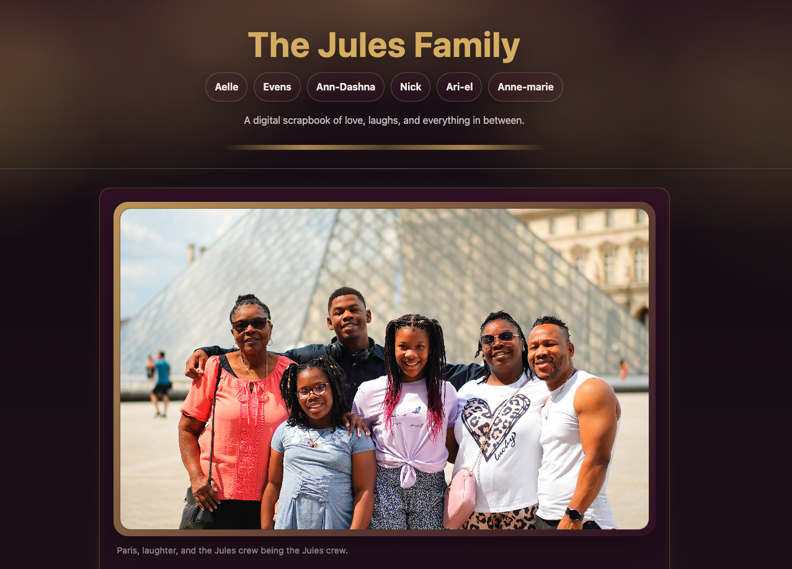
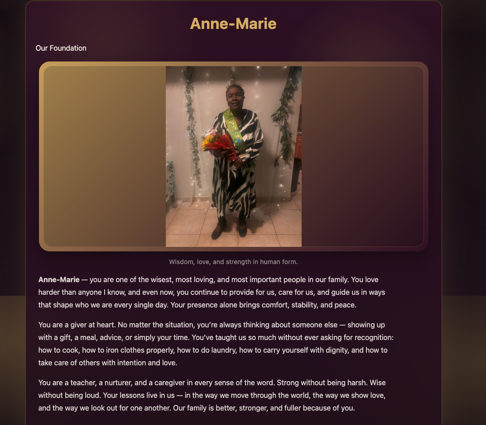
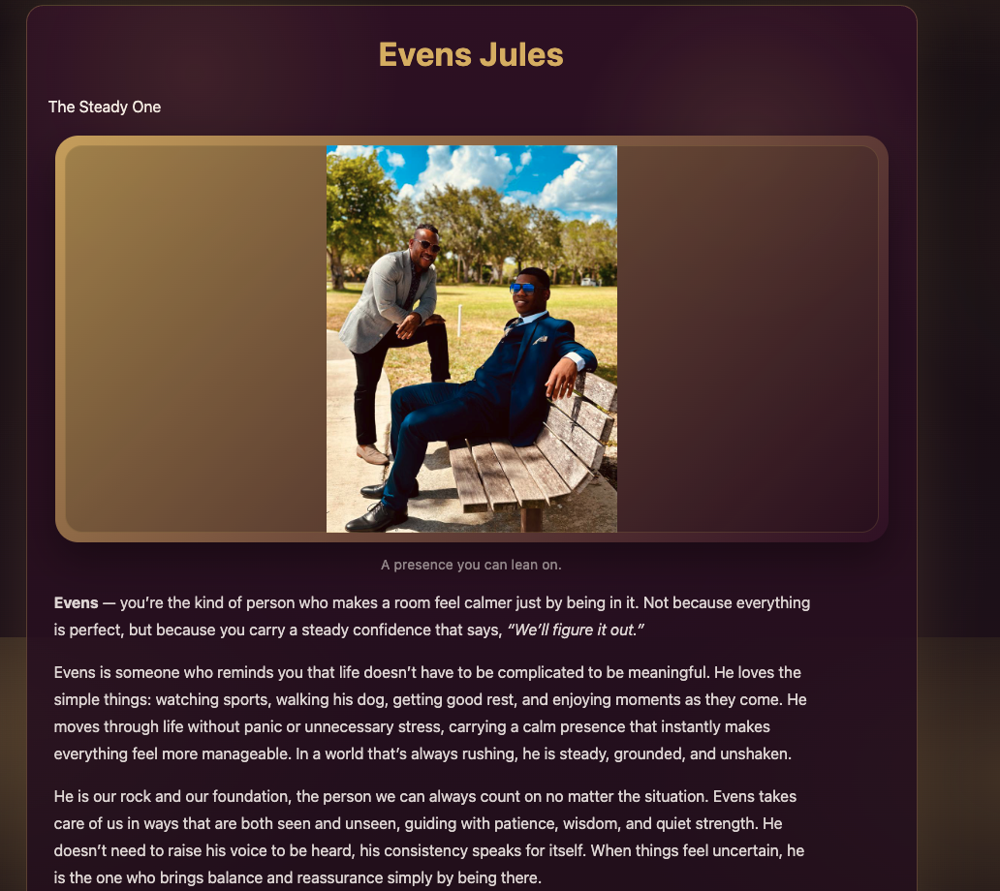
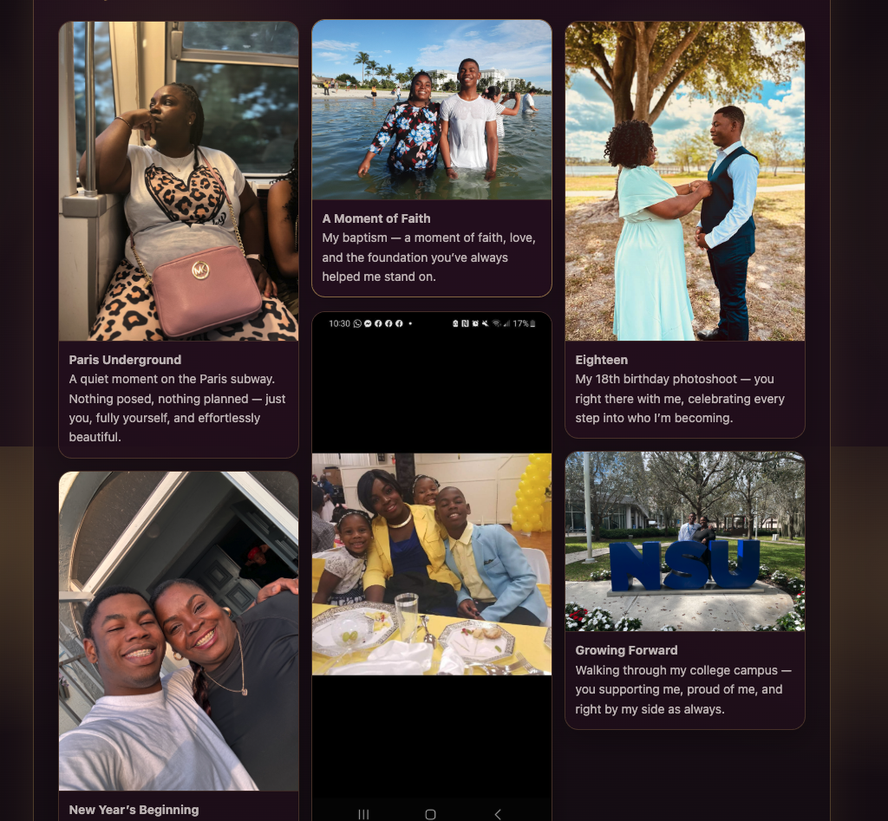
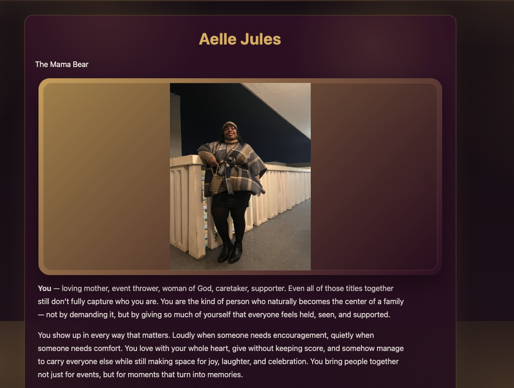

The Problem
The goal was to create something more personal than a normal gift. The project needed to feel emotional, polished, and custom-built for the family instead of looking like a generic photo album or template.
The site also needed to organize multiple family members, photos, captions, and written tributes in a way that felt easy to navigate while still preserving the warmth of the memories.
The Solution
I built a custom digital scrapbook with a warm visual direction, family navigation, individual profile pages, and image-led memory sections.
The final site works as a personal archive: part tribute, part family gallery, and part interactive birthday gift that can continue to grow over time.

Site Features
This project focused on storytelling, emotional design, and clean organization rather than a traditional business workflow.
Tech Stack
Challenges
- Balancing emotional writing with a clean website structure that still felt easy to browse
- Organizing multiple family profiles without making the site feel crowded or repetitive
- Designing photo-heavy sections with different image sizes, crops, and orientations
- Creating a warm visual identity that felt personal while still looking polished
Results
- Multi-page family archive built to last
- Responsive memory experience across all devices
- Personalized storytelling layouts for each member
- Dynamic family navigation between profiles
- Emotion-focused design system throughout
Site Preview



